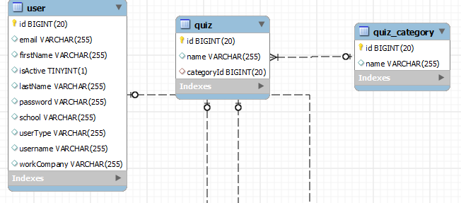
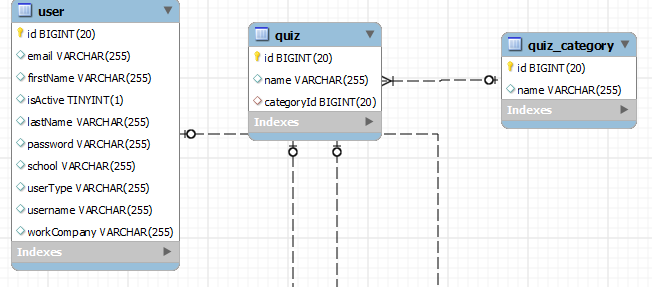

Kyro ORM Documentation
The first thing to remember, even this small project name ORM. It's not even deserve name ORM. I'm give name ORM caused i don't know how to name except ORM. This project just make a stupid and simple Object maker from an sql (JDBC) query result. I'm make this as i look some people strugle to make good query result to Object converter. It's not everybody cases. But, i had look at people that assume it's mess/bad code, since i hard to debug it. I make this project very simple. So if someone interesting to patch/update feature. Let me know.
Technology used :
- Java
- Mysql (For now, please fork if you want to update functionalities)
How it work
 

Take a look of this simple UML class diagram and ERD Schema. So, let me explain this very simple (stupid maybe) idea to convert an Query Result (JDBC) to a Class.
The question are, how to get All Object of User and All Object of Quiz. Let's analyze this mysql query for retrieve that
Get All User object:
SELECT user.id AS user_id,
user.email AS user_email,
user.firstName AS user_firstName,
user.isActive AS user_isActive,
user.lastName AS user_lastName,
user.username AS user_username,
user.userType AS user_userType
FROM user
You can see all fields are give alias with following rules: (table_name)_(field_name)
SELECT quiz.id AS quiz_id,
quiz.name AS quiz_name,
quiz_category.id AS quiz_category_id,
quiz_category.name AS quiz_category_name
FROM quiz
LEFT JOIN quiz_category ON quiz.categoryId = quiz_category.id
So, the idea. Since the Query field are unique. I make a list of mapping class.
public FieldMapping(String propertyName,String fieldName,DataType dataType)...
e.g: new FieldMapping("id", "id", DataType.INTEGER)
With this field mapping information. Every query can be map to class more easy.
Let's get started